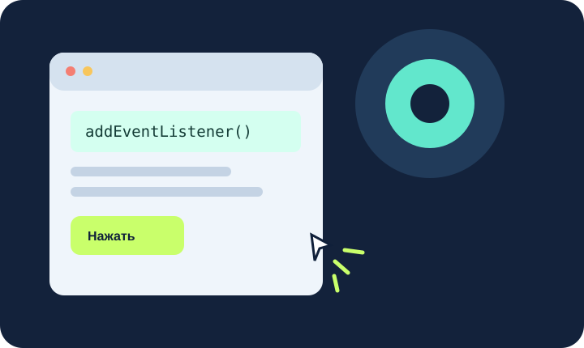

JavaScript — интерактивность
JavaScript позволяет реагировать на события, проверять значения и менять страницу после действий пользователя.
Объектная модель документа
Браузер разбирает HTML и строит дерево объектов DOM. JavaScript может находить элементы, читать их свойства и менять содержимое.
- Найти элемент через
getElementById()илиquerySelector(). - Прочитать или изменить текст.
- Вывести понятное сообщение о результате.
const heading = document.querySelector('h1');
heading.textContent = 'Новый заголовок';
События и обработчики
Событие возникает при клике, вводе текста или отправке формы. Обработчик запускает программную логику в ответ на действие.
- проверить заполнение полей;
- показать ответ вычисления;
- изменить текст на странице;
- сообщить об ошибке ввода.